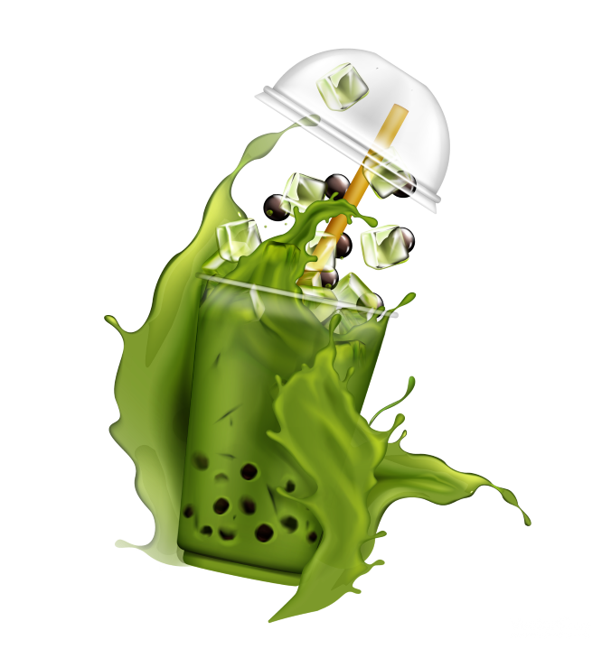

QUÁ TRÌNH HÌNH THÀNH

Quá trình hình thành một tiệm trà sữa bao gồm các bước sau. Ban đầu, chủ tiệm định rõ mục tiêu kinh doanh và
ý
tưởng độc đáo của mình. Sau đó, họ điều tra thị trường để hiểu nhu cầu và sở thích của khách hàng. Tiếp
theo,
chủ tiệm xây dựng một kế hoạch kinh doanh chi tiết, bao gồm việc lựa chọn địa điểm phù hợp và thiết kế nội
thất
ấn tượng. Tiệm cũng cần tìm nhà cung cấp nguyên liệu chất lượng và thiết kế menu đa dạng. Sau khi hoàn
thiện,
tiệm trà sữa sẽ được quảng bá thông qua mạng xã hội và các hoạt động marketing. Khi khách hàng đến, họ sẽ
được
phục vụ bởi nhân viên thân thiện và chuyên nghiệp. Quá trình này cần kiên nhẫn và quản lý hiệu quả để đảm
bảo
thành công của tiệm trà sữa trong thị trường cạnh tranh.
Tiếp sau đó, chủ tiệm trà sữa cần chuẩn bị về quy trình sản xuất và phục vụ, đảm bảo chất lượng và vệ sinh an
toàn thực phẩm. Họ cần đào tạo nhân viên về cách làm các loại trà sữa, kỹ năng giao tiếp và chăm sóc khách
hàng.
Sau khi tiệm trà sữa được mở cửa, chủ tiệm cần duy trì và phát triển quan hệ với khách hàng.
CÂU CHUYỆN THƯƠNG HIỆU

Tên gọi Gong Cha xuất phát từ ý nghĩa trong tiếng Hoa là Trà cung đình. Thời xưa, các loại trà tốt nhất
thường
được các vị hoàng thân quý tộc ngự dùng. Ngày nay, Gong Cha mong muốn phục vụ các loại trà tốt nhất cho thực
khách, cũng như chính tên gọi của thương hiệu. Kể từ khi được thành lập vào năm 2006 tại Đài Loan, chuỗi cửa
hàng Gong Cha đã mở rộng trên khắp 19 quốc gia với 1.500 cửa hàng và con số này vẫn tiếp tục tăng trưởng
không
ngừng. Qua nhiều năm nỗ lực phát triển, Gong Cha đã trở nên phổ biến với khách hàng từ nhiều quốc gia và trở
thành một trong những thương hiệu trà đáng tin cậy hàng đầu trên thế giới.
Câu chuyện thương hiệu của tiệm trà sữa bắt đầu từ một ý tưởng độc đáo và đam mê khám phá hương vị mới.
Founder
của tiệm trà sữa là một người đam mê nghệ thuật và văn hóa của trà, họ tìm kiếm sự hoàn hảo trong mỗi ly trà
sữa.
Với tình yêu và sự tận tụy, founder đã dành nhiều tháng nghiên cứu và thử nghiệm để tạo ra những công thức
trà
sữa độc đáo và ngon nhất. Họ chọn kỹ lưỡng từng nguyên liệu chất lượng và thiết kế menu đa dạng, đáp ứng sự
đa
dạng của khách hàng.
Tiệm trà sữa khởi đầu từ một kiosk nhỏ với một nhóm nhân viên nhiệt tình và có tay nghề. Khách hàng đến và
trải
nghiệm sự tỉ mỉ trong từng ly trà sữa, nhấm nháp từng giọt để tận hưởng vị ngon tuyệt đỉnh.
Qua nỗ lực không ngừng, tiệm trà sữa trở thành điểm đến yêu thích của cộng đồng. Khách hàng trung thành đến
từ
khắp nơi, truyền đi lời khen và giới thiệu cho bạn bè mỗi ngày.
Câu chuyện thành công của thương hiệu tiệm trà sữa này dựa trên phẩm chất cao cấp, dịch vụ chu đáo và sự
sáng
tạo không ngừng. Đó chính là lý do tiệm trà sữa trở thành một thương hiệu đáng tin cậy và tạo được sức hấp
dẫn
đối với những ai yêu thích trà và sữa.